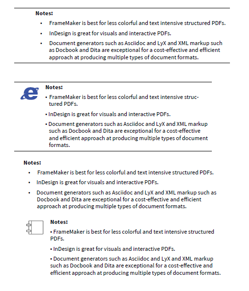

Formatting admonitions in unstructured FrameMaker¶
Table of Contents
Admonition text are sections of a document that add/explain details about a particular chapter or part. They are generally formatted as a separate block of text and categorized as either Note, Important, Caution, Warning and Tip, although the captions/conventions vary according to the author and publication style guide. They generally break the flow of text and can be distracting when used too often, though they are indispensable for highly complex work such as documentation for developers and engineering specifications. Admonition blocks/lists can include a colorful customized icon like those found in the excellent Fedora Project documentation, or a black and white icon such as those found in Wiley books.
Document generators such as Asciidoc and XML/XSLT tool chains using Docbook, xsltproc, SAX and DITA take care of formatting and adding the icon but in unstructured Adobe FrameMaker, writers will have to create a paragraph or table style specifically for admonition paragraphs, blocks, or lists. Creating admonitions in WYSIWYG applications such as Adobe InDesign and CorelDraw is easy since all you need is to Place the icon image next to a resized text frame. However, unless you anchor the icon to a text frame (which isn’t really recommended for image-intensive documentations), managing the flow of text in InDesign can be tricky. InDesign, in contrast, relies on anchored objects for managing text and images, though users who are accustomed to InDesign’s click and drag approach may find InDesign’s roundabout approach frustrating at first.
Admonition paragraphs¶
Admonition paragraphs are nothing more than text formatted/positioned differently from the main text flow. Admonition paragraphs focus on one technical point only and shouldn’t be too long. To create an admonition paragraph with a caption:
With your insertion point in the paragraph you want to format, click the Commands button and then New Format in Paragraph Designer.
In the New Format window, enter a Tag name and click Create.
Click the Basic button and enter
0.5"on Left indent. Most writers prefer text blocks to be flush to the right like most of the text but if you prefer to isolate the paragraph completely, add0.5"on the Right indent also.Enter a point value in the Above Pgf and Below Pgf items. This adds white space between the note and the rest of the text and breaks up long narratives.
Click Update All or Apply.
If you prefer to add formatting to the Note/Important/Warning/Caution caption, create a separate Character tag using the Character Designer.
Admonition paragraphs with icons¶
Small icons highlight the section and attract the reader’s attention. However, they are often unnecessary in more serious documents. They are acceptable for consumer user manuals, however, since they make the documentation friendlier to readers and more colorful.
Admonition example from the Samsung S4 manual.¶
To add an icon to an admonition paragraph:
Place the insertion point at the beginning of the paragraph.
Click File > Import. Navigate to the image file and select either Import By Reference or Copy Into Document.
Click Import.
Using your mouse pointer, select the image frame.
Click Special > Anchored Frame.
In the Anchored Frame pod, change the Anchoring Position to Run into Paragraph. Change Alignment to Left.
Using your mouse pointer, select the image inside the frame. Hold down SHIFT and drag the handles to resize the icon. Select the frame and resize the frame as well.
If you want to retain the paragraph’s alignment, resize the image frame so the text aligns as before. Since the text runs around the image, adjusting the tabs won’t help so adjusting the image frame is a good workaround to achieve an aligned text.
Tip
To reuse the icon and the resized image frame, just select the image frame using the mouse pointer, copy, and then paste on to the next admonition paragraph.
Admonition blocks/lists¶
Admonition blocks/lists work the same way as any bulleted list in FrameMaker - just add the left and right indents to separate them from the flow of the text. The text for “Notes:” should have its own Character tag while the bulleted list would have its own Paragraph tag. Use Tabs to keep the bulleted list aligned.
If there’s already an instance of the icon for the admonition, just copy and paste it on the insertion point. Again, you might have to resize the image frame to retain the list’s alignment.
Admonition blocks separated by upper and bottom lines¶
Some manuals and documentation use lines or boxes to separate the text from the flow. This is extremely easy to set up in InDesign or Microsoft Word using Paragraph Rules, an option missing in Framemaker 10.
Screenshot from a Netopia modem manual.¶
You can draw lines using the Graphics Toolbar in FrameMaker but it won’t be anchored with the text. As a workaround, you can use the Table Designer instead to create the “box” for your admonition.
To create a Table tag specifically for admonition blocks:
Click Table and then Insert Table.
In the Insert Table window, input
1for Columns and1for Body Rows. Remove any Heading Rows. Click Insert.
Place the insertion point inside the table cell.
In Table Designer, click the Commands > New Format. Input a name for your admonitions table tag. Click Create.
Click the Basic button in Table Designer. Input Left and Right Indents.
In the Title item, select No Title.
Click the Ruling button in Table Designer. In the Outside Ruling section, select
Nonefor Left and Right Ruling. Click Update All or Apply.Click the Table menu and select Format > Resize Columns.
In the Resize Selected Columns window, input a value in the To Width box.
Type the text or list inside the table. You can also add an icon if needed, customize the shading, or lines of the table.
The newly created table tag will now appear as an option whenever you need to insert a table for admonitions.
The screenshot below displays the PDF result of the different ways of formatting admonition blocks with or without icons or lines.
